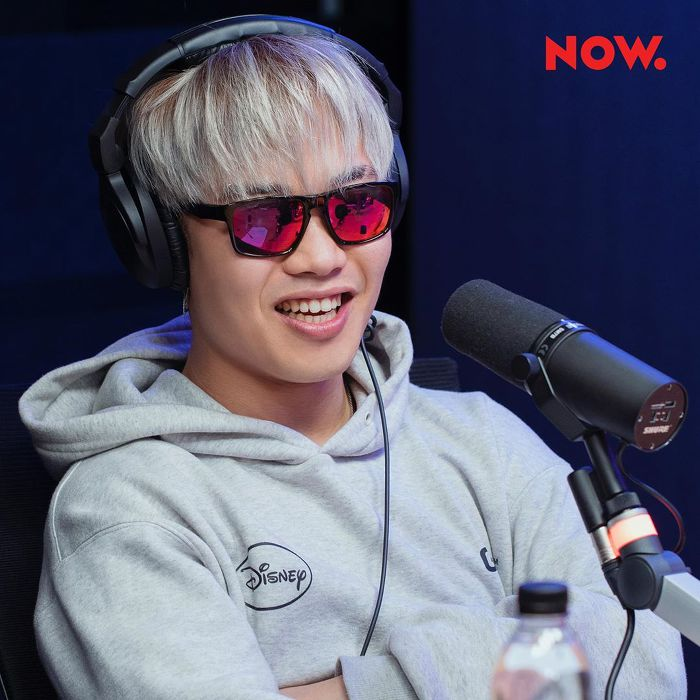

머쉬베놈, 대한민국의 래퍼.
멋이 벤 머쉬베놈 이제 진정한 머심 애로
충청도 방언의 억양을 적극적으로 활용하는 플로우를 가지고 있다. 랩의 발상지는 미국이고, 영어는 액센트와 억양이 굉장히 중요한 언어이며 이는 랩에서도 큰 축을 차지하고 있어서 랩의 리듬감뿐만 아니라 싱잉 랩이 아니라면 상대적으로 강조되지 않는 랩의 멜로디를 강조해주는 효과를 가지고 있었다. 한국어는 표준어의 경우 억양이 매우 평탄하지만, 각 지역의 방언은 억양이 강하기에 '랩을 할 때 한국어 방언의 억양을 영어의 악센트처럼 플로우와 멜로디에 녹여낼 수 있지 않을까?'라는 발상에 간간이 이런 시도를 하던 래퍼들이 있었다. 대표적인 예가 대구 사투리로 곡을 많이 풀어내던[8] MC 메타나 마이노스, 경상도 방언과 지역색을 강조하면서 나왔던 제이통. 허나 2010년대 이후 대한민국 힙합의 트렌드가 결국 본토 미국 힙합의 최신 유행을 누가 누가 빨리 들여오나로 바뀌게 되며 대가 끊긴[9][10] 스타일. 머쉬베놈의 두둥등장에 사이먼 도미닉[11]과 이센스가 그렇게 반가워했던 것은 어쩌면 이때의 기억과 추억을 다시 느끼게 해줘서일 수도 있다. 이렇듯 머쉬베놈의 랩은 충청도 방언의 억양을 매우 적극적으로 활용하는데, 이런 스타일의 문제라면 처음 들을 때는 강렬한 인상을 남기나 자칫 잘못하면 '촌스럽다', '낡은 거 한다'라는 인상을 주기도 쉽다는 점이다. 머쉬베놈은 이런 부분을 굉장히 유머러스한 가사와 플로우의 활용으로 넘기고 있다. 실제로 힙합 팬들이 좋아하는, 그리고 그의 인기곡들은 모두 유머로 점철되어 있다. 플로우와 톤이 극단적으로 과장될 때는 소위 조선식 플로우. 본인은 궁예를 표현하려는 듯하며, 드라마의 사극 톤을 연상시키는 모습을 보여줄 때도 있다. 간혹 '웃기기만 하지 기본기가 없는 게 아니냐'하는 시선도 있었으나 이미 2019년 시점에서 머쉬베놈의 기본기나 실력에 대해 의심을 하는 팬들은 없다. 애초에 머쉬베놈의 스타일 자체가 이제는 소위 '붐뱁 꼰대'가 되어버린 세대에서 주로 시도하던 스타일로, 어지간히 붐뱁 기반의 랩에 대한 이해도와 실력이 없으면 시도하기 힘든 스타일이다. 이미 머쉬베놈은 여러라이브를 통해 본인의 실력을 보였다. B급인 척 하는 S급 SHOW ME THE MONEY 8 4차 예선에서 펀치넬로랑 붙어 쓰인 곡 '왜 이리 시끄러운 것이냐'가 강한 중독성으로 인기를 얻었고, 이후 유명 래퍼들의 샤라웃(shout out)을 받게 되었다. 쇼미8 우승자를 이겼으니 머쉬베놈이 진또배기라는 말에 반박하는 사람이 없다.[12]
참가한다는 소식이 나왔을때 이미 여러 곡들의 발매와 유튜브 활동, ㄷㄷㄷㅈ으로 큰 인기를 끌고 있었는데, 그래서 그런지 리그 오브 레전드 플레이어들과 학생들에게 큰 호응을 얻었으나 유력한 우승후보로 꼽히지는 않았다. 그럴만도 한게 당시 쇼미9 영상지원에 오왼, 빌스택스, 스윙스등등 여러 굵직한 래퍼들이 많았기 때문이다. 그러나 회차가 거듭될수록 머쉬베놈은 레전드 무대를 만들며 유튜브 인기 급상승 동영상에 밥먹듯이 오르며 쇼미더머니 9의 모든 참가자중 압도적으로 가장 많은 조회수를 기록했고 유력한 우승후보로서의 입지를 다지게 되었다.[16] 본인의 실력을 보여주는 것 뿐만 아니라 미란이의 성장을 이끌어내는 모습을 보여주며 프로듀서의 소질도 보인다는 의견도 종종 보인다. 여담으로 참가자 프로필이 공개되었는데, 지원하게 된 동기 란에 '14학번 동기' / 우승을 한다면? 란에 '동창회 열테니 동참해'라고 적었다.(...)